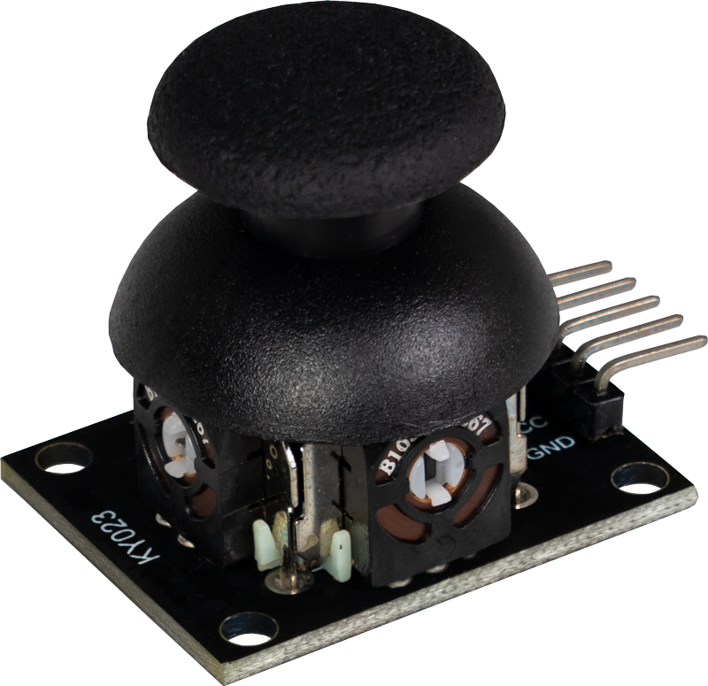
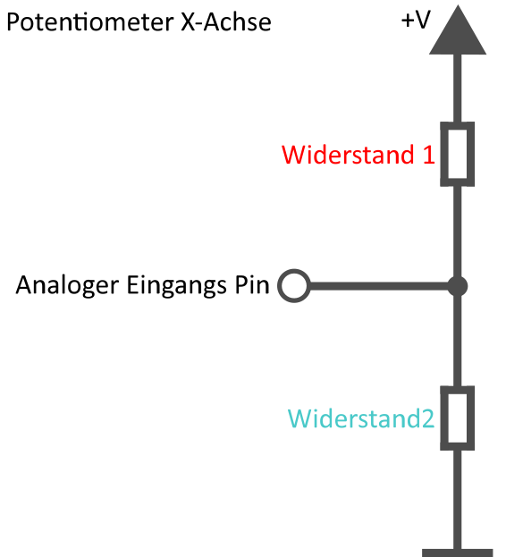
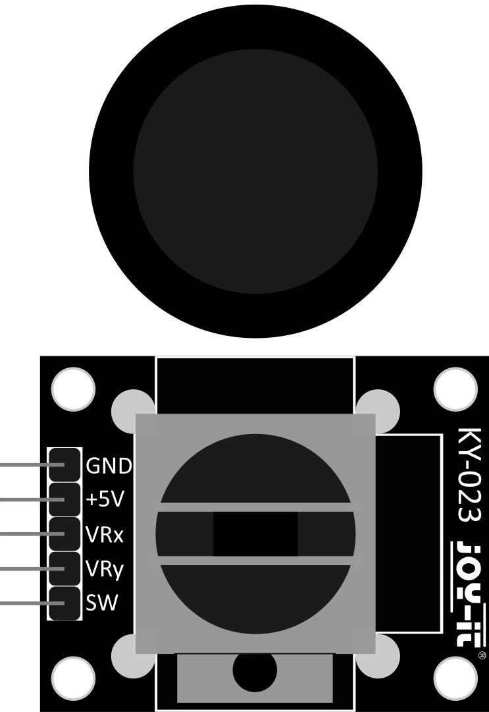
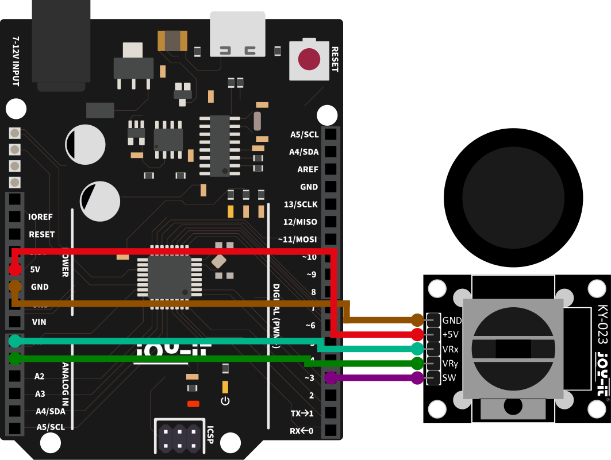

19. Dezember 2026
Das Schlitten-Lenkspiel
Ab auf die Rodelbahn! Mit dem Joystick lenkst du deinen Schlitten zwischen den Tannenbäumen hindurch – der Buzzer meldet jeden Zusammenstoß.
Heute im Säckchen
KY-023 Joystick (X-Y-Achsen)
X und Y Position des Joysticks, werden als analoge Spannung auf den Ausgangspins ausgegeben.

Dieses Modul erfasst die X- und Y-Position eines Joysticks und gibt diese als analoge Spannung an den Ausgangspins aus. Für jede Achse, X und Y, ist ein eigenes Potentiometer eingebaut. Im Ruhezustand befindet sich das Potentiometer in der Mitte, was bedeutet, dass die Widerstände und damit die Spannungen gleich sind.
Wenn die Position der X- oder Y-Achse verändert wird, ändern sich die Widerstände in Abhängigkeit von der neuen Position. Diese Veränderung der Widerstände führt zu unterschiedlichen Spannungswerten, die zwischen den Widerständen gemessen werden können. So kann die genaue Position der Achse bestimmt werden.
Dieses Modul ist ideal für Anwendungen wie Steuerungen in Spielen, Robotik oder anderen Projekten, bei denen die präzise Erfassung der Bewegung erforderlich ist. Durch die Ausgabe der Position als analoge Spannung kann der Joystick einfach in verschiedene elektronische Systeme integriert werden, um eine genaue und intuitive Steuerung zu ermöglichen.

Anschlussbelegung


| Arduino | Sensor |
|---|---|
| 5 V | +5V |
| GND | GND |
| Pin A1 | VRy |
| Pin A0 | VRx |
| Pin 3 | Knopf |
Weihnachtswerkstatt mit Bauteilen der letzten Tage
Weihnachtswerkstatt: Das Schlitten-Lenkspiel
Ab auf die Rodelbahn! Im Seriellen Monitor saust dein Schlitten (S) eine verschneite Bahn hinunter, auf der immer wieder Tannenbäume (^) stehen. Mit dem Joystick lenkst du nach links und rechts. Jeder Zusammenstoß kostet ein Leben, und der Buzzer von Tag 6 brummt. Wer schafft die meisten Punkte?
Verdrahtung
| Komponente | Arduino-Pin | Anschluss am Modul |
|---|---|---|
| KY-023 Joystick X | A0 | VRx |
| KY-023 Joystick Y | nicht belegt | VRy |
| KY-023 Knopf | 3 | Knopf |
| KY-023 | 5V / GND | +5V / GND |
| KY-006 von Tag 6 | 8 | Signal |
| KY-006 von Tag 6 | GND | GND |
Ablauf
Die Bahn rückt alle 400 ms eine Reihe weiter, das Tempo stellst du mit TAKT_MS ein. Für jede Reihe ohne Zusammenstoß gibt es einen Punkt. Sind alle drei Leben verbraucht, startet ein Druck auf den Joystick-Knopf ein neues Rennen. Fährt der Schlitten in die falsche Richtung, halte den Joystick einfach andersherum.
Deine Knobelaufgabe
Im Sketch fehlt der Inhalt der loop()-Funktion. Die Kommentare darin verraten dir, was passieren soll – programmiere es selbst! Die Auflösung findest du morgen ganz unten auf der Seite von Türchen 20.
// Türchen 19: Das Schlitten-Lenkspiel
// Verdrahtung siehe tag-19.md
const char ART[] PROGMEM = R"ART(
____
| \_______________
| o o o o |
\___________________/
======================
Tuerchen 19: Das Schlitten-Lenkspiel
)ART";
const int JOY_X = A0; // KY-023 VRx
const int JOY_KNOPF = 3; // KY-023 Knopf, LOW beim Drücken
const int BUZZER = 8; // KY-006 von Tag 6
const int BREITE = 9; // Spuren auf der Rodelbahn
const int HOEHE = 5; // sichtbare Reihen; die unterste ist die Reihe des Schlittens
const int TAKT_MS = 400;
int baum[HOEHE]; // Spur des Tannenbaums in jeder Reihe, -1 = frei
int sx; // Spur des Schlittens
int leben;
unsigned long punkte;
void neuesSpiel() {
for (int y = 0; y < HOEHE; y++) baum[y] = -1;
sx = BREITE / 2;
leben = 3;
punkte = 0;
Serial.println("Neues Rennen! Lenke mit dem Joystick nach links und rechts.");
}
void zeichne() {
for (int y = 0; y < HOEHE; y++) {
Serial.print('|');
for (int x = 0; x < BREITE; x++) {
if (y == HOEHE - 1 && x == sx) Serial.print('S');
else if (baum[y] == x) Serial.print('^');
else Serial.print(' ');
}
Serial.println('|');
}
Serial.print("Leben: ");
Serial.print(leben);
Serial.print(" Punkte: ");
Serial.println(punkte);
Serial.println();
}
void setup() {
pinMode(JOY_KNOPF, INPUT_PULLUP);
pinMode(BUZZER, OUTPUT);
Serial.begin(9600);
Serial.println((const __FlashStringHelper*)ART);
randomSeed(analogRead(A5)); // offener Analogeingang liefert zufälliges Rauschen
neuesSpiel();
}
void loop() {
// In jedem Takt: lenken, die Bahn eine Reihe nach unten schieben (oben vielleicht
// ein neuer Baum), Zusammenstoß prüfen und zeichnen. Ein Treffer kostet ein Leben
// und brummt; ohne Leben startet der Joystick-Knopf ein neues Rennen.
}Das Grundlagen-Beispiel
KY-023 Joystick (X-Y-Achsen)
Code-Beispiel
Das Programm liest die aktuellen Werte der Eingang-Pins, konvertiert diese in eine Spannung (0-1023 -> 0 V-5 V) und gibt diese in der seriellen Ausgabe aus.
Um das folgende Codebeispiel auf deinen Arduino zu laden, empfehlen wir die Verwendung der Arduino IDE. In der IDE kannst du den passenden Port und das richtige Board für dein Gerät auswählen.
Kopiere den unten stehenden Code in deine IDE. Um den Code auf deinen Arduino hochzuladen, klicke einfach auf den Upload-Button.
// Deklaration und Initialisierung der Eingang-Pins
int joystick_X = A0; // X-Achse-Signal
int joystick_Y = A1; // Y-Achse-Signal
int joystick_button = 3; // Knopf
void setup () {
pinMode(joystick_X, INPUT);
pinMode(joystick_Y, INPUT);
pinMode(joystick_button, INPUT);
// Da der Knopf das Signal beim druecken auf Masse zieht,
// schalten wir hiermit den PullUp-Widerstand ein
digitalWrite(joystick_button, HIGH);
Serial.begin (9600); // Serielle Ausgabe mit 9600 bps
}
// Das Programm liest die aktuellen Werte der Eingang-Pins
// und gibt diese auf der seriellen Ausgabe aus
void loop () {
// Temporäre Variablen
float temp_x, temp_y;
int button_value;
// Aktuelle Werte werden ausgelesen, auf den Spannungswert konvertiert...
temp_x = analogRead(joystick_X) * (5.0 / 1023.0);
temp_y = analogRead(joystick_Y) * (5.0 / 1023.0);
button_value = digitalRead(joystick_button);
// ... und an dieser Stelle ausgegeben
Serial.print ("X-Achse: ");
Serial.print (temp_x, 4);
Serial.print ("V, \tY-Achse: ");
Serial.print (temp_y, 4);
Serial.print ("V, \tKnopf: ");
if (button_value == 1) {
Serial.println("nicht gedrückt");
}
else {
Serial.println("gedrückt");
}
delay(1000);
}Lösung für Tag 18 anzeigen
// Auflösung zu Türchen 18: Der Wunschzettel
// Verdrahtung wie im Artikel KY-040 (CLK an Pin 3, DT an Pin 4, Knopf an Pin 5)
const char ART[] PROGMEM = R"ART(
____________________
/ Wunschzettel /|
| - ............ | |
| - ............ | |
| - ............ | |
|___________________|/
Tuerchen 18: Der Wunschzettel
)ART";
const int pin_clk = 3;
const int pin_dt = 4;
const int button_pin = 5; // aktiv LOW
const char* const WUENSCHE[] = {
"Schlitten",
"Lebkuchenherz",
"Neue Sensoren",
"Dicke Wollsocken",
"Ein Lötkolben",
"Schnee bis zum Fensterbrett",
"Ein Tag ohne Hausaufgaben",
};
const int ANZAHL = sizeof(WUENSCHE) / sizeof(WUENSCHE[0]);
bool gewaehlt[ANZAHL];
int position = 0;
int pin_clk_last;
bool knopfVorher = false;
void zeigeAuswahl() {
Serial.print("> ");
Serial.print(WUENSCHE[position]);
Serial.println(gewaehlt[position] ? " [steht schon drauf]" : "");
}
void zeigeZettel() {
Serial.println("Mein Wunschzettel:");
for (int i = 0; i < ANZAHL; i++) {
if (gewaehlt[i]) {
Serial.print(" - ");
Serial.println(WUENSCHE[i]);
}
}
}
void setup() {
pinMode(pin_clk, INPUT);
pinMode(pin_dt, INPUT);
pinMode(button_pin, INPUT);
digitalWrite(pin_clk, true); // interne Pull-ups wie im Artikel
digitalWrite(pin_dt, true);
digitalWrite(button_pin, true);
pin_clk_last = digitalRead(pin_clk);
Serial.begin(9600);
Serial.println((const __FlashStringHelper*)ART);
Serial.println("Drehen zum Blättern, Drücken zum Aufschreiben oder Streichen.");
zeigeAuswahl();
}
void loop() {
// Drehrichtung wie im Artikel: Unterscheiden sich DT und CLK, wurde im Uhrzeigersinn gedreht.
// Pro Raststufe wechselt CLK zweimal; nur die fallende Flanke zählt, sonst springt die Liste doppelt.
int pin_clk_current = digitalRead(pin_clk);
if (pin_clk_current != pin_clk_last && pin_clk_current == LOW) {
if (digitalRead(pin_dt) != pin_clk_current) {
position = (position + 1) % ANZAHL;
} else {
position = (position + ANZAHL - 1) % ANZAHL;
}
zeigeAuswahl();
}
pin_clk_last = pin_clk_current;
bool knopf = !digitalRead(button_pin);
if (knopf && !knopfVorher) {
gewaehlt[position] = !gewaehlt[position];
Serial.print(WUENSCHE[position]);
Serial.println(gewaehlt[position] ? " steht jetzt auf dem Wunschzettel." : " wurde gestrichen.");
zeigeZettel();
delay(50); // Knopf entprellen
}
knopfVorher = knopf;
}